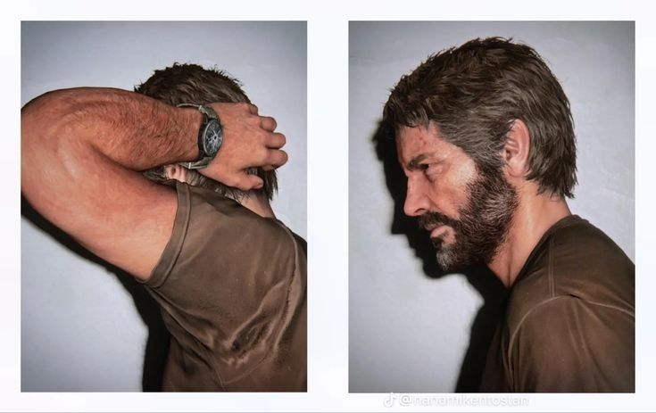
Джоэл - главный герой, контрабандист. В первой игре Джоэл выступает в качестве главного героя, ему поручено сопровождать юную Элли по пост-апокалиптическим США в попытке создать потенциальное лекарство от инфекции, к которой у Элли иммунитет. Некоторые особенности персонажа: В первой части игры Миллер — чуткий и эмоциональный отец-одиночка, но после смерти дочери он превращается в бесчувственного и бескомпромиссного убийцу. За 20 лет выживания Джоэл стал физически и морально закалённым бойцом — находчивым, практичным и эмоционально непробиваемым. По ходу игры происходит внутренняя трансформация героя, вызванная привязанностью к Элли.
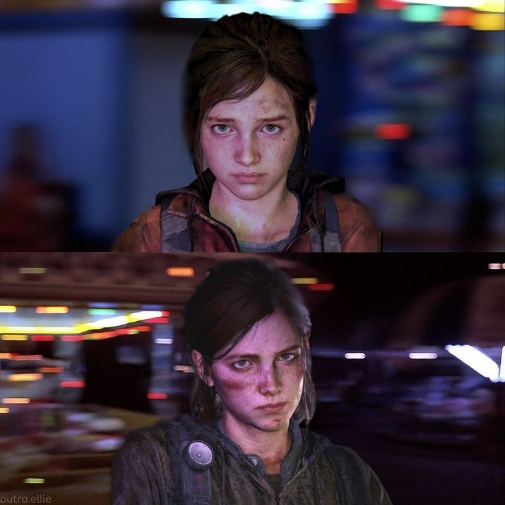
Элли - подросток с иммунитетом. Родилась в 2019 году, через 6 лет после начала пандемии, и росла в Бостоне, в карантинной зоне. Мать Элли умерла на следующий день после родов. В 13 лет девочка попала в военную школу-интернат, но долго там не проучилась. Выясняется, что у Элли иммунитет к кордицепсу, и она становится носителем редкой мутировавшей формы болезни. Элли перенесла много психических травм в детстве и подростковом возрасте, что отразилось на её взглядах на мир. Способна веселиться как обычный подросток, любит животных и привязывается к тем, кому она небезразлична.
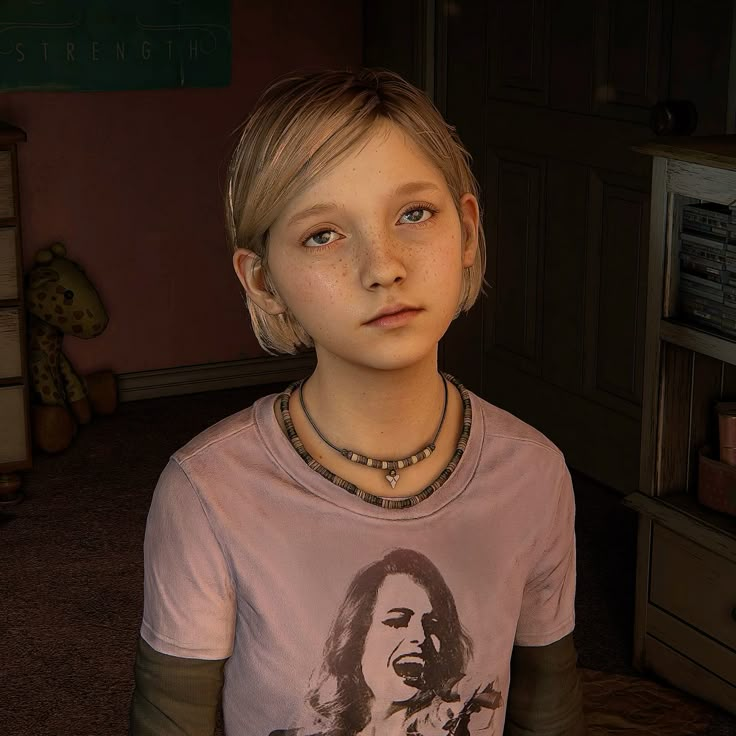
Сара Миллер — 12-летняя дочь Джоэла До вспышки болезни Сара жила обычной жизнью в Остине (штат Техас) со своим отцом Джоэлом. Одно время играла в молодёжной футбольной команде и выиграла индивидуальную награду. Любила активный отдых, например, походы со своим отцом и катание на скейтборде. Была поклонницей рок-группы The Bash и серии фильмов «Рассвет волка», о чём свидетельствуют плакаты в её спальне. Статус: мертва. Причина смерти - убита солдатом во время всеобщей паники из-за вспышки эпидемии, потеря крови. Дата смерти — 27 сентября 2013 года.
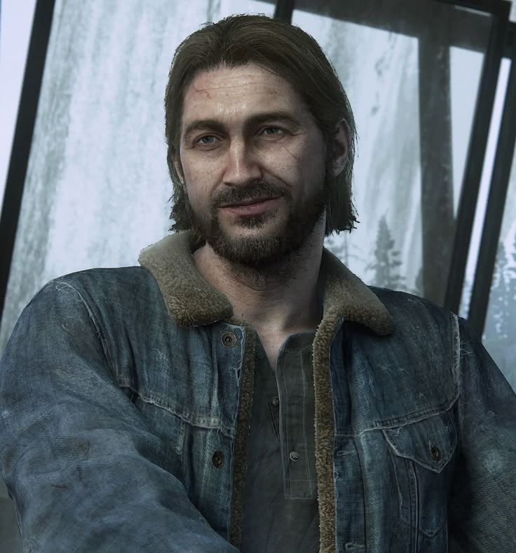
Томми Миллер - выживающий в условиях эпидемии кордицепсной церебральной инфекции. Младший брат Джоэла, дядя Сары, муж Марии и бывший член «Цикад». До вспышки заражения Томми жил в Техасе, работал. Вместе с Джоэлом пытался выжить в первые дни, пережил множество потерь. Когда стало ясно, что мира прежнего больше нет, Томми пошёл искать новый — вступил в ряды «Цикад». Тогда он ещё верил, что можно изменить мир к лучшему, но увидев, какими методами действуют «Цикады», разочаровался и ушёл. Вскоре Миллер оставил «Цикад», уехал в графство Джексон, где поселился в заброшенной ГЭС, сделав из неё безопасное убежище. Женился на женщине по имени Мария, и они вместе стали лидерами убежища, на которое постоянно нападали бандиты.
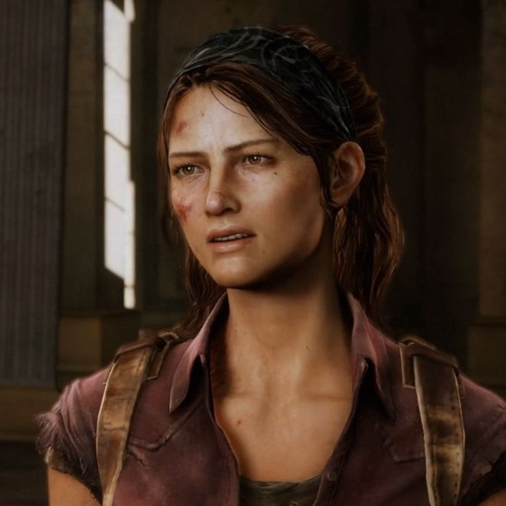
Тесс — жительница 4-й Бостонской карантинной зоны. После вспышки мозговой инфекции кордицепсом она стала контрабандисткой в этой зоне. Первая встреча с Тесс происходит, когда она приходит в квартиру Джоэла после того, как на неё нападают люди, посланные Робертом — дилером, не желающим отдавать обещанную им партию оружия. Тесс использует свои связи, чтобы пробраться подземными тоннелями до территории Роберта, где к неудовольствию партнёров выясняется, что тот продал всё оружие «Цикадам». Марлин, лидер «Цикад», предлагает Тесс и Джоэлу вернуть украденное Робертом обратно, если они согласятся помочь доставить Элли в здание Капитолия за пределами зоны карантина.
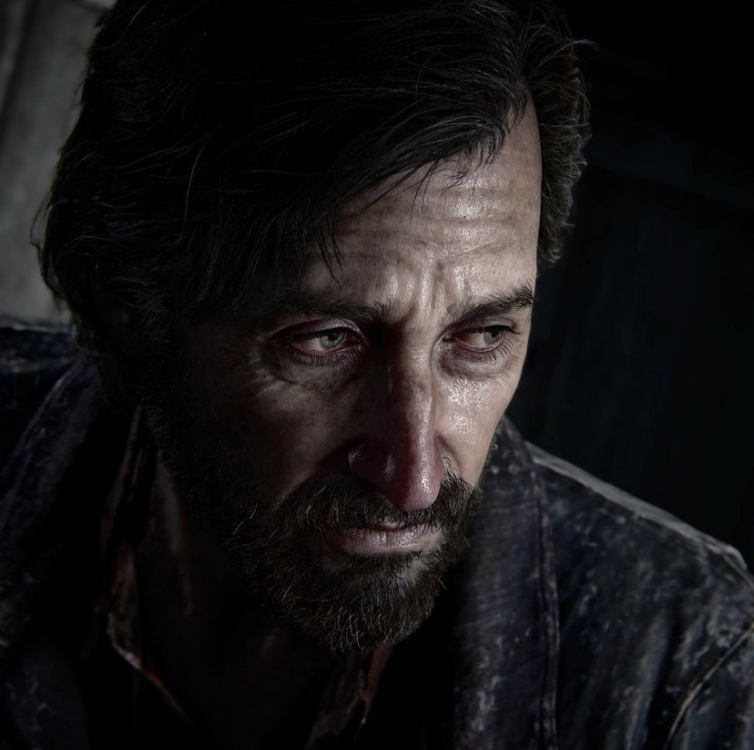
Дэвид - антагонист игры The Last of Us, выживающий в условиях пандемии кордицепсной церебральной инфекции. Лидер группы выживших — «каннибалов». О жизни Дэвида до эпидемии известно мало. После эпидемии он решает создать группу «каннибалов», которая проживает на Сильвер-Лейк (Колорадо). Из-за нехватки припасов в лагере Дэвид и его люди убивают и съедают выживших. Позже Дэвид начал терять контроль над своей группой, так как его люди утверждали, что устали от него и его «хобби». Дэвид встречается с Элли во время её охоты на оленя. Поначалу представляется как добродушный охотник, который ищет пропитание для своего народа. Элли не верит словам выжившего, но Дэвид предлагает принести ей что-нибудь — антибиотики, которые нужны Джоэлу. Дэвид посылает за лекарствами своего друга Джеймса, а сам устраивает привал вместе с Элли. После вынужденного совместного отражения нападения заражённых Дэвид рассказывает, что именно он на самом деле является главой банды охотников, которую Элли и Джоэл убили ранее в Университете Восточного Колорадо, когда Джоэл был ранен. Дэвид позволяет Элли уйти, но позже выслеживает её и похищает, забирая на свою базу в городе. Там Элли обнаруживает, что банда Дэвида — каннибалы. Она сопротивляется их попыткам — ей удаётся убить помощника Дэвида и бежать в город, в то время как Дэвид и его банда преследуют её. В конце концов, Дэвид загоняет Элли в ресторан и преследует её несколько минут, пока ресторан не загорается. В конце концов, ему удаётся прижать Элли и попытаться задушить, но она хватает его мачете и, размахивая им, сбивает его с себя, после чего жестоко рубит его до смерти. (ненавижу эту часть сюжета, пройти это было невероятно сложно)
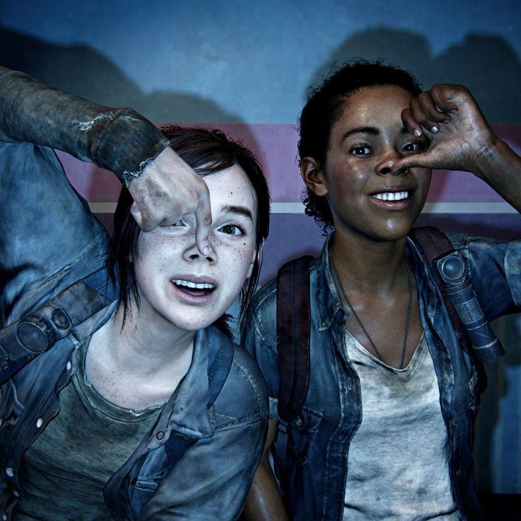
Райли — подруга Элли, они подружились во время пребывания в Бостоне. На момент «Оставшихся позади» девушке было 16 лет, она вместе с Элли находилась в приюте под крылом «Цикад». По сюжету Райли погибает от инфекции кордицепса после укуса заражённого. Смерть Райли усиливает чувство вины Элли и является одной из причин, по которой она стремится найти лекарство от инфекции с помощью своего иммунитета.
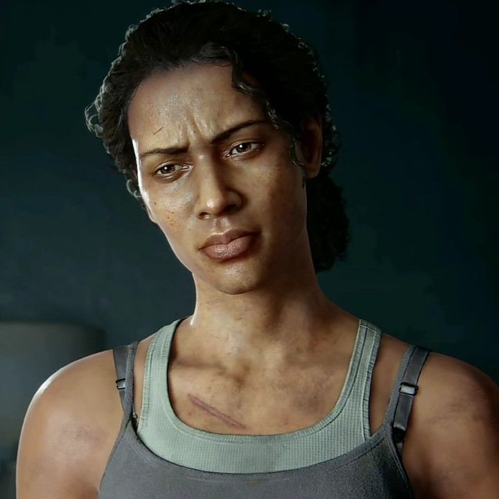
Марлин — лидер группировки «Цикады» и близкая подруга Анны — матери Элли Уильямс. Марлин выживает в условиях пандемии кордицепсной церебральной инфекции. Некоторые характеристики персонажа: Амбиции и сложная философия. Марлин стремится спасти человечество и имеет идею, которую отказываются принимать военные. Целеустремлённость и забота. Марлин более 15 лет пытается найти лекарство и даже завербовала лучших врачей и подчинённых. Чувства привязанности и долга. Марлин ответственна перед Элли и любит её как собственную дочь, но отдаёт её Цикадам. Умение вести торговлю и переговоры. Марлин способна уговаривать людей, даже тех, кто не находится под её подчинением. (уж такого предательства от неё я не ожидала)
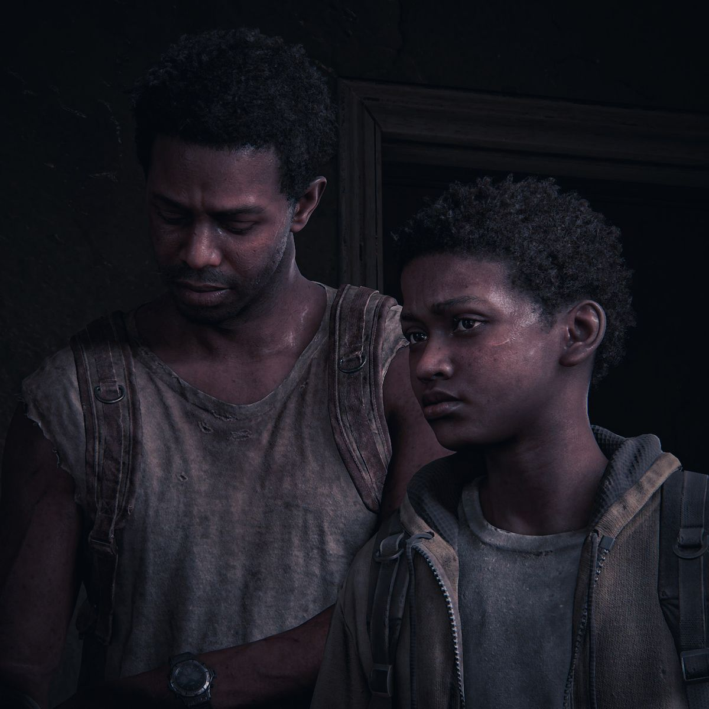
Сэм(старший) и Генри(младший) — братья из Хартфорда, которые надеялись найти убежище и припасы в Питтсбурге. Однако из-за характера охотников в городе они подверглись нападению и были отделены от своей группы выживших. Сэм и Генри встречаются с Джоэлом и Элли, когда все четверо объединяются, чтобы сбежать из города. В конце игры выясняется, что Сэма укусил инфицированный, и он нападает на Элли, заставляя Генри убить его. Преодолевая горе и вину за смерть своего брата, Генри совершает самоубийство с помощью своего пистолета.
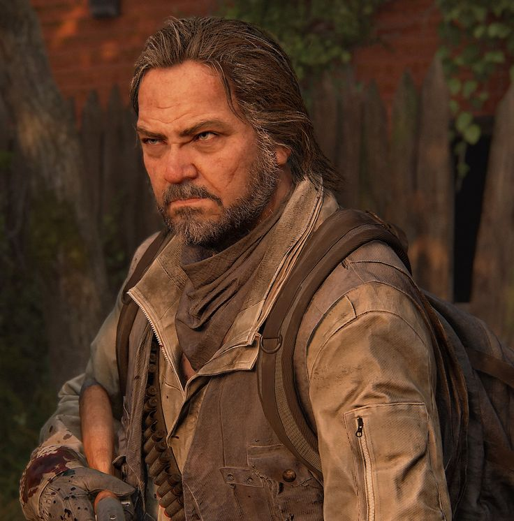
Нет информации о жизни Билла до эпидемии. Однако, ссылаясь на высокий уровень навыков по починке оборудования и конструированию устройств из металлолома, можно предположить, что в прошлом он работал механиком или инженером. После эпидемии Билл и его партнёр Фрэнк — единственные жители Линкольна, городка, всё население которого было заражено. Вскоре Фрэнк покидает Билла и исчезает. Чтобы защитить себя от заражённых и охотников, Билл сооружает баррикады и устанавливает ловушки (растяжки) на улицах города. Билл имеет торговые отношения с Джоэлом и Тесс по ввозу контрабанды в Бостон — запасов еды, патронов и оружия, а также, время от времени, медикаментов. По ходу сюжета выясняется, что Билл имеет долги перед Джоэлом.
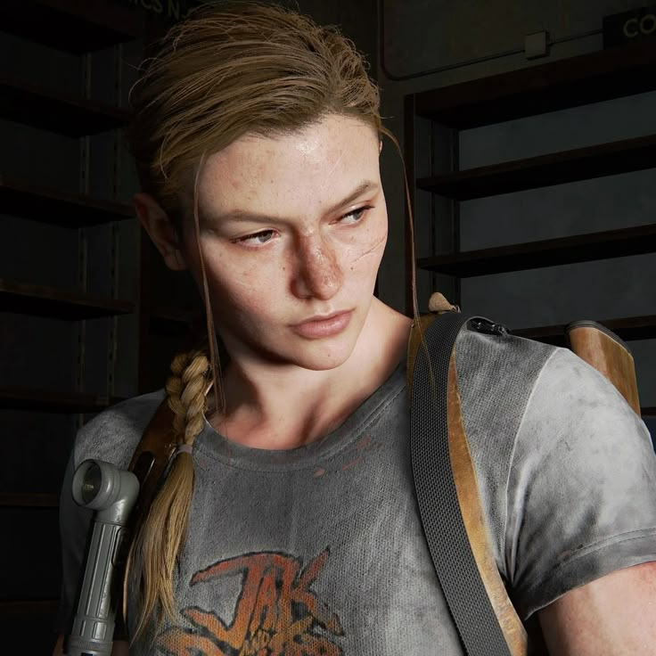
Эбби состоит в рядах Вашингтонского Освободительного Фронта (ВОФ). Вместе со своими боевыми товарищами она мстит Джоэлу Миллеру, ранее убившему её отца. Впоследствии Андерсон заводит дружбу с двумя бывшими членами религиозного культа Серафитов, с которыми солдаты ВОФ находятся в состоянии войны. Образ Эбби строится на двух ключевых противоречиях: с одной стороны, она отказалась от всего ради мести, с другой — Эбби — воплощение «девочки-отличницы»: обожествляет отца, по уши влюблена в Оуэна, стала лучшим бойцом ВОФ и по-матерински заботится о Леве.
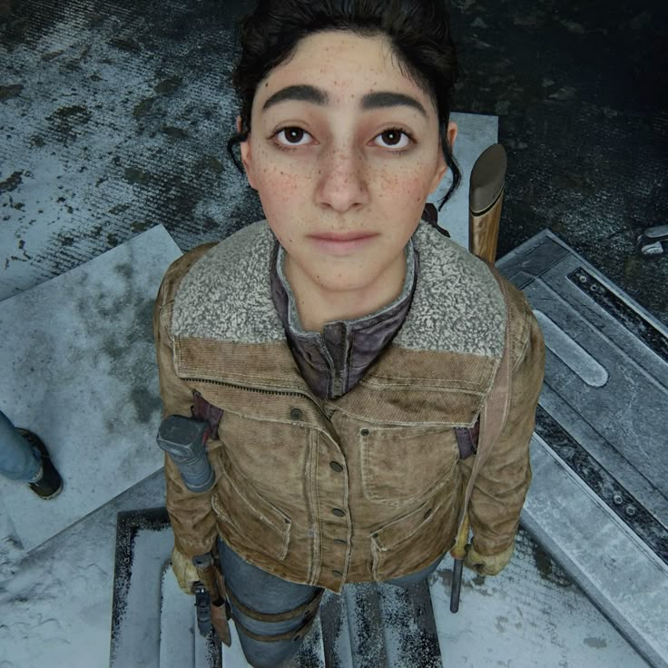
Родители Дины были убиты, когда она была маленькой, оставив её сиротой. Дину воспитывала старшая сестра Талия, которая также была убита до событий игры. Приехала в Джексон незадолго до того, как Джоэл и Элли начали налаживать там свою жизнь. Впервые у Дины завязались отношения с Джесси, но их разрыв прокладывает путь к дружбе с Элли. Дина — религиозный человек: её старшая сестра часто водила её в молитвенный дом и учила молиться. Во время событий игры Дина упоминает, что и сейчас нередко молится (перед отъездом из Джексона, на могиле Джоэла, а иногда тихонько про себя). Дина становится важной частью жизни Элли. Она становится не только соратником, но и поддержкой для Элли в трудные времена. Присоединяется к крестовому походу Элли, чтобы отомстить тем, кто убил Джоэла. Во время путешествия в Сиэтле Дина узнаёт, что беременна от Джесси. Когда Эбби устраивает засаду в театре, она нападает на Дину и угрожает убить её, но в конце концов щадит её по настоянию Лева. На протяжении всей игры Дина выступает в роли стабилизирующей силы для Элли, поддерживая её в моменты эмоциональных потрясений.
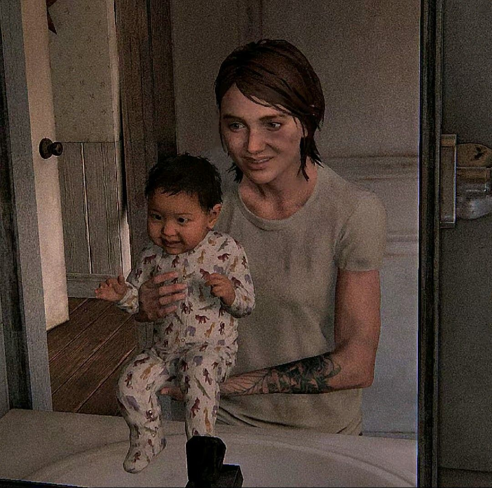
Джей-джей - сын Дины и Джесси. Дата рождения: около 2039–2040. Возраст на момент появления в игре — около года. Жизнерадостный ребёнок, любит танцевать.
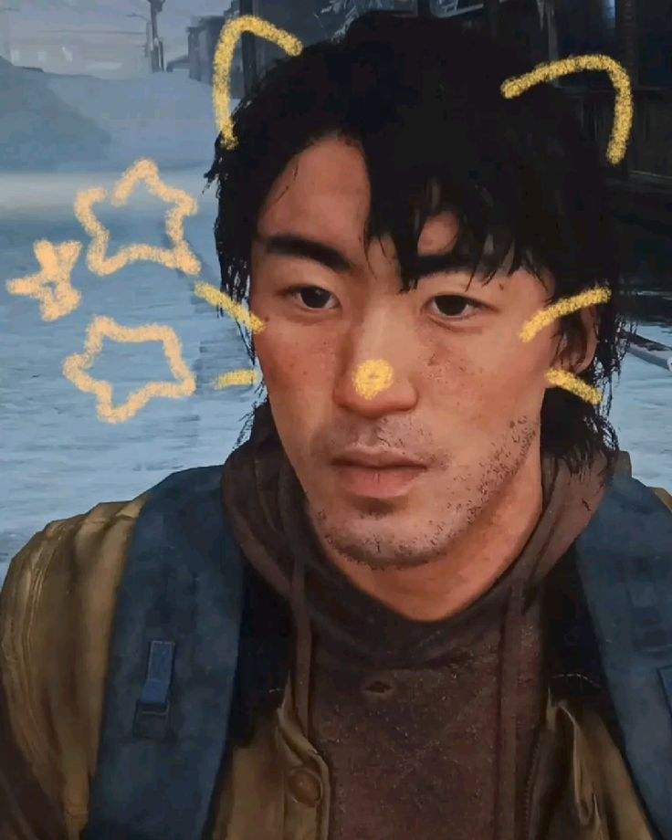
До событий игры Джесси переехал в Джексон (Вайоминг) и жил там под руководством Томми и Марии. Там же познакомился с девушкой Диной, ещё одной выжившей, и завёл с ней романтические отношения. Они были описаны Элли как «периодические». За годы жизни в Джексоне Джесси проводил много вылазок и был назначен лидером патрульных групп. За неделю до событий игры Дина и Джесси расстались. Причина расставания не упоминается, но Дина ведёт себя так, будто во всём виноват Джесси. Джесси — один из персонажей, который присоединяется к Элли в её стремлении к мести. Например, после смерти Джоэла Джесси незаметно покидает Джексон, чтобы помочь друзьям отомстить за его смерть. В бою Джесси использует пистолет, винтовку и мачете для борьбы с врагами, в том числе с заражёнными. Джесси умирает в игре — его убивает Эбби в Сиэтле. Это происходит, когда Джесси пытается помочь Томми. Интересный факт: имя «Джесси» переводится как «Дар божий». Во время вылазок Джесси отмечал себя в журнале как «Джесс», и Элли пишет это прозвище в своём дневнике.
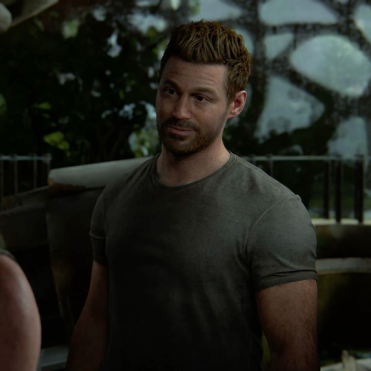
Был членом "Цикад", исполнял обязанности солдата на заставе Солт-Лейк-Сити. Подружился с дочерью доктора Джерри Андерсона — Эбби, позже у них завязались отношения. В 2034 году Оуэн обнаружил, что обитатели больницы были убиты выжившим Джоэлом Миллером. Вместе с выжившими Оуэн обнаружил труп Джерри и утешил Эбби, когда она прибыла. Оуэн перегруппировался с Эбби, Мэнни, Мелом, Норой, Лией, Ником и Джорданом, и они отправились в Сиэтл, штат Вашингтон, где были приняты во Фронт освобождения Вашингтона (WLF). Незадолго до падения "Цикад" в Солт-Лейк-Сити у Оуэна и Эбби завязались романтические отношения, но одержимость Эбби охотой на Джоэла привела к тому, что пара рассталась.
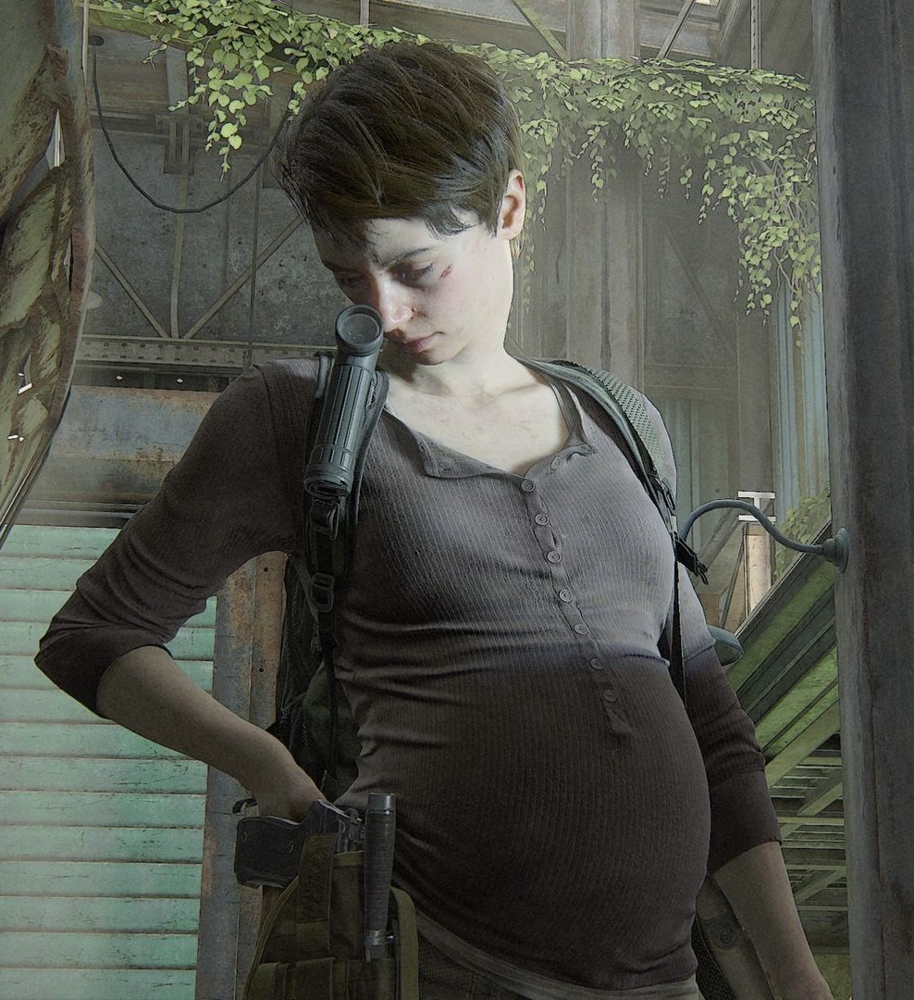
у персонажа романтические отношения с Оуэном, она беременна его ребёнком, что вызывает напряжение между Мэлл и Эбби. Вместе с Оуэном Мэллу убивает Элли в сцене на третий день в Сиэтле.
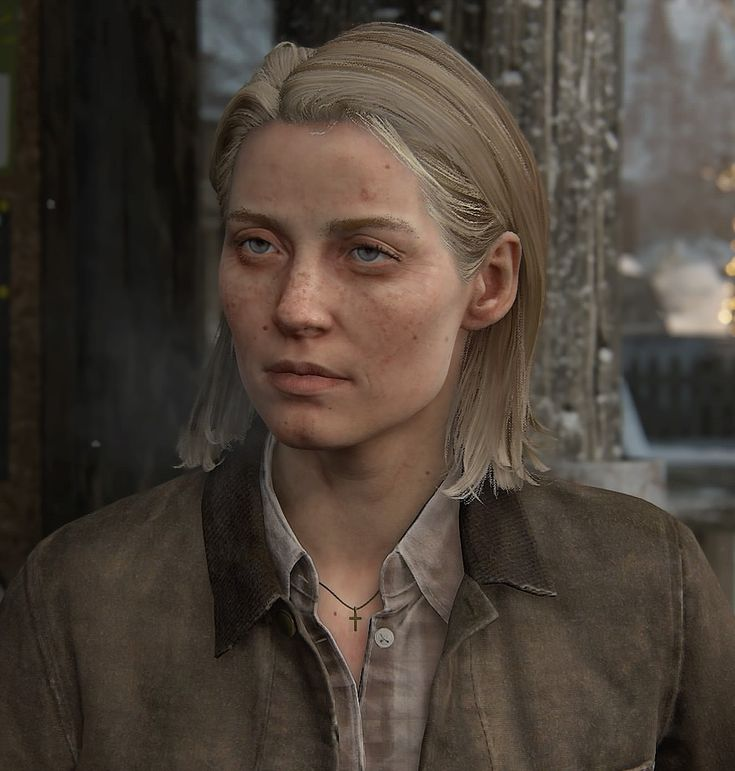
Мария - жена Томми и глава общины в Джексоне. После вспышки инфекции Мария и её отец управляли поселением в графстве Джексон, которое образовалось на территории гидроэлектростанции. Позже Мария вышла замуж за Томми после его ухода из «Цикад». Когда Джоэл и Элли посещают поселение, Мария выступает против предложения Джоэла о том, чтобы Томми сопровождал Элли к «Цикадам», так как она боится, что он подвергнется опасности. В конечном счёте Джоэл продолжает своё путешествие с Элли, а Томми возвращается в поселение с Марией. В конце игры можно узнать, что Мария и Томми на время расстались.
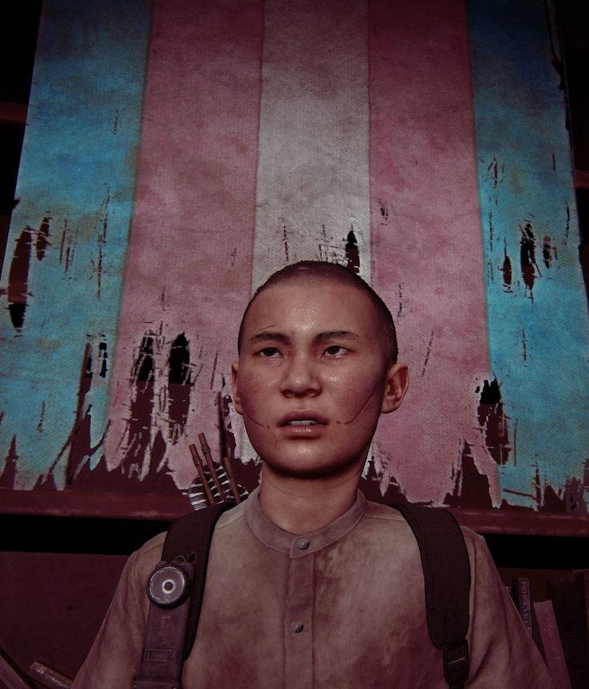
Ранее носил имя «Лили». Родился в семье набожной серафитской матери вместе со старшей сестрой Ярой. Семья жила в деревне на Серафитском острове в Сиэтле, штат Вашингтон. Лев отвергал традиции серафитов, но по совету Яры держал свои чувства при себе. Был назначен женой для старейшины деревни, но отказался от этого и начал идентифицировать себя как мужчину, побрив голову и начав именовать себя как «Льва». Этот акт неповиновения был встречен негативно, что заставило Льва бежать. Вместе с Ярой образовал связь с Эбби.
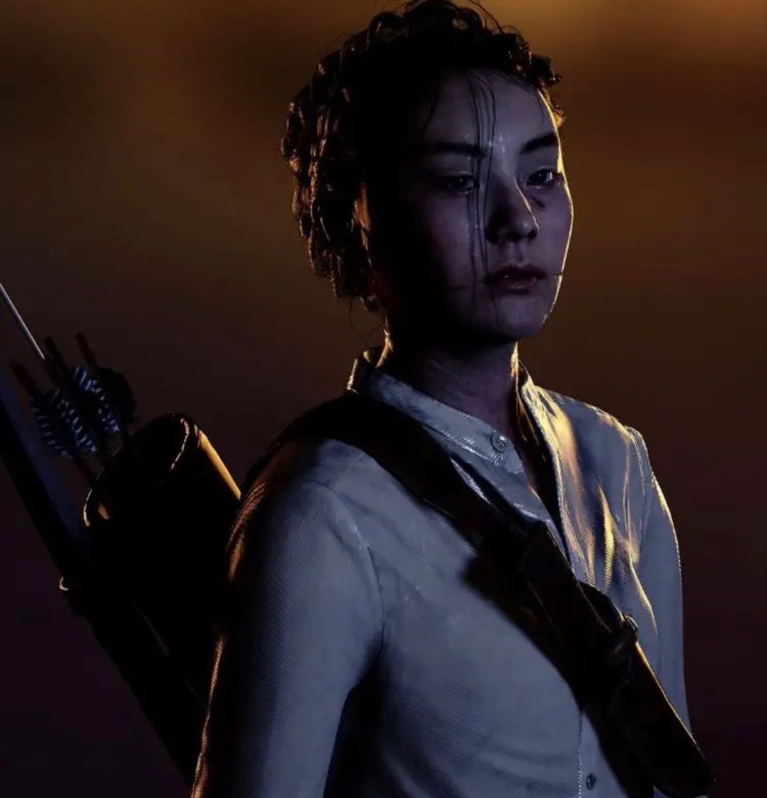
До событий игры Яра была первенцем набожной женщины-серафитки, за которой примерно через три года родился Лев (тогда известный как «Лилли»). В возрасте 13 лет Яра была выбрана воином своей деревни для борьбы с Вашингтонским фронтом освобождения (WLF). Переломный момент в жизни Яры и Лева наступил, когда Старейшины договорились, чтобы Лев женился на одном из старейшин. Желая быть воином, подобным Яре, Лев в знак неповиновения обрил голову, открыто назвав себя мужчиной. Яра сначала плохо отреагировала, кричала и ударила его, но, зная, что Серафиты попытаются убить Льва за свой выбор, Яра помогла ему сбежать. Это привело к тому, что Серафиты заклеймили эту пару как "вероотступники". Яра попадает в плен к серафитам, которые ломают ей руку, раздробив кость, после чего её спасает Лев. Эбби помогает брату и сестре найти безопасное место для ночлега. На следующий день Эбби отводит их к своим друзьям Оуэну и Мэлу; последний, хирург, определяет, что у Яры компартмент-синдром, и вынужден ампутировать ей руку.
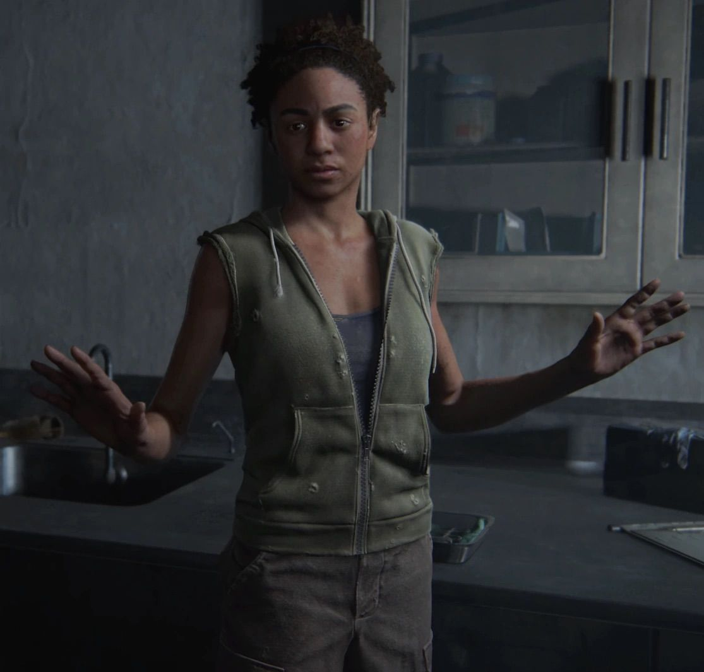
Когда-то была членом «Цикад», работала врачом под руководством главного хирурга Джерри Андерсона в Солт-Лейк-Сити. После смерти Джерри от рук Джоэла Нора присоединилась к друзьям — Эбби, Оуэну, Мэнни, Джордану, Лие и Мэл — в их поездке в Сиэтл, чтобы стать членом ВОФ. Вскоре после Рождества в 2038 году Нора отправилась с Эбби и другими в Джексон в поисках Джоэла, чтобы отомстить ему за его нападение на «Цикад». После визита в Джексон Нора со всей группой вернулась обратно в Сиэтл, где трудилась в медицинском отделе ВОФ на их передовой оперативной базе, когда «Псы» готовили финальный штурм на остров серафитов.
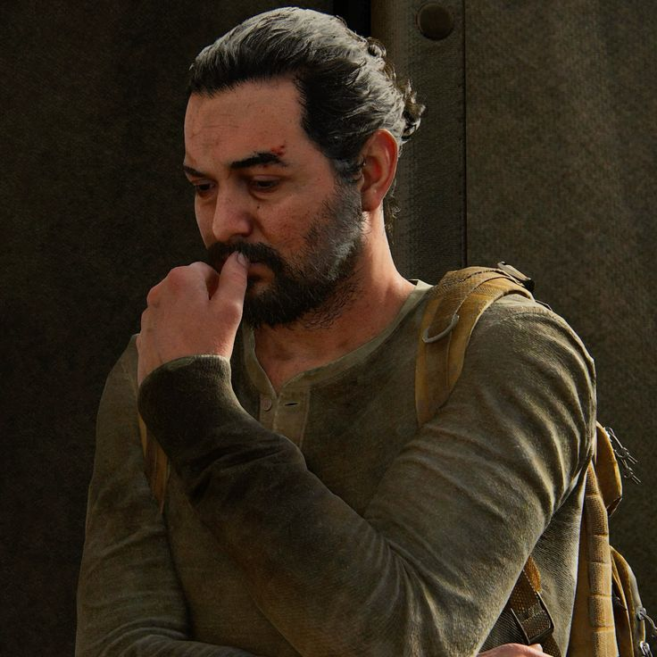
Мэнни вырос в Мексике со своим отцом. Присоединился к «Светлячкам» после вспышки мозговой инфекции кордицепсом. К 2034 году находился в больнице Святой Марии в Солт-Лейк-Сити (штат Юта). После распада «Светлячков» Мэнни присоединился к ВОФ вместе с Эбби Андерсон, Оуэном, Мелом и Норой Харрис в Сиэтле (штат Вашингтон). Дослужился до звания лейтенанта в ВОФ. Лидер ВОФ Айзек считал его одним из своих лучших солдат. Владеет двумя языками: свободно владеет испанским и английским.
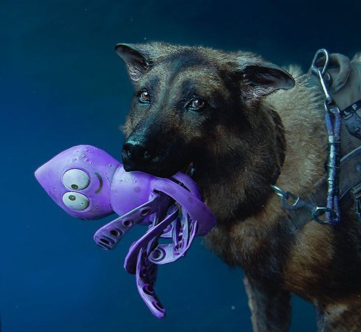
Бакли живёт на дамбе Томми в Джексоне, Вайоминг, США. Порода пса — возможно, австралийская пастушья собака или бордер-колли. Бакли можно встретить в седьмой главе, на гидроэлектростанции. Подойдя к нему, можно погладить. Предположительно, Бакли убежал в другую часть дамбы, когда она была атакована бандитами, так как во время боя он отсутствует. Имя персонажа выбрано в честь настоящей собаки Троя Бейкера, который озвучивал Джоэла.